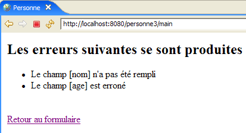
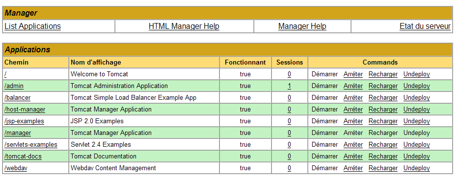

8. مكتبة علامات JSTL
8.0.1. مقدمة
لننظر إلى طريقة العرض [erreurs.jsp]، التي تعرض قائمة بالأخطاء:

هناك عدة طرق لكتابة مثل هذه الصفحة. هنا، نحن مهتمون فقط بجزء عرض الأخطاء. أحد الحلول هو استخدام كود Java كما تم:
<%@ page language="java" contentType="text/html; charset=ISO-8859-1"
pageEncoding="ISO-8859-1"%>
<!DOCTYPE HTML PUBLIC "-//W3C//DTD HTML 4.01 Transitional//EN">
<%@ page import="java.util.ArrayList" %>
<%
// on récupère les données du modèle
ArrayList erreurs=(ArrayList)request.getAttribute("erreurs");
String lienRetourFormulaire=(String)request.getAttribute("lienRetourFormulaire");
%>
<html>
<head>
<title>Personne</title>
</head>
<body>
<h2>Les erreurs suivantes se sont produites</h2>
<ul>
<%
for(int i=0;i<erreurs.size();i++){
out.println("<li>" + (String) erreurs.get(i) + "</li>\n");
}//for
%>
</ul>
<br>
<form name="frmPersonne" method="post">
<input type="hidden" name="action" value="retourFormulaire">
</form>
<a href="javascript:document.frmPersonne.submit();">
<%= lienRetourFormulaire %>
</a>
</body>
</html>
تسترد صفحة JSP قائمة الأخطاء من الطلب (السطر 8) وتعرضها باستخدام حلقة Java (الأسطر 19–23). تخلط الصفحة بين كود HTML وكود Java، مما قد يشكل مشكلة إذا كانت الصفحة بحاجة إلى صيانة من قبل مصمم ويب لا يفهم كود Java بشكل عام. لتجنب هذا الخلط، تُستخدم مكتبات العلامات لإضافة إمكانيات جديدة إلى صفحات JSP. باستخدام مكتبة العلامات JSTL (مكتبة العلامات القياسية لـ Java)، يصبح العرض السابق كما يلي:
<%@ page language="java" contentType="text/html; charset=ISO-8859-1"
pageEncoding="ISO-8859-1"%>
<!DOCTYPE HTML PUBLIC "-//W3C//DTD HTML 4.01 Transitional//EN">
<%@ taglib uri="/WEB-INF/c.tld" prefix="c" %>
<html>
<head>
<title>Personne</title>
</head>
<body>
<h2>Les erreurs suivantes se sont produites</h2>
<ul>
<c:forEach var="erreur" items="${erreurs}">
<li>${erreur}</li>
</c:forEach>
</ul>
<br>
<form name="frmPersonne" method="post">
<input type="hidden" name="action" value="retourFormulaire">
</form>
<a href="javascript:document.frmPersonne.submit();">
${lienRetourFormulaire}
</a>
</body>
</html>
العلامة (السطر 4)
تشير إلى استخدام مكتبة علامات محددة في الملف [/WEB-INF/c.tld]. سيتم استخدام هذه العلامات في كود الصفحة، مسبوقة بالحرف c (prefix="c"). يمكنك استخدام أي بادئة من اختيارك. هنا، يشير الحرف c إلى [core]. تسمح لك البادئات باستخدام مكتبات العلامات التي قد تحتوي على نفس الأسماء لبعض العلامات. ويؤدي استخدام البادئة إلى حل أي غموض. لم تعد الصفحة الجديدة تحتوي على كود Java في المكانين اللذين كانا يحتويان عليه سابقًا:
- استرداد قالب الصفحة [errors, returnFormLink] (قسم تمت إزالته)
- عرض قائمة الأخطاء (الأسطر 13–15)
تم استبدال حلقة عرض الأخطاء بالكود التالي:
<c:forEach var="erreur" items="${erreurs}">
<li>${erreur}</li>
</c:forEach>
- تُستخدم علامة <forEach> لتعريف حلقة
- يُستخدم الترميز ${variable} لعرض قيمة متغير
تحتوي علامة <forEach> هنا على خاصيتين:
- تحدد items="${errors}" مجموعة الكائنات التي سيتم التكرار عليها. هنا، المجموعة هي كائن errors. أين يوجد هذا؟ تبحث صفحة JSP عن سمة باسم "errors" بشكل متتالي وبالترتيب التالي:
- كائن [request]، الذي يمثل الطلب المرسل من وحدة التحكم: request.getAttribute("errors")
- كائن [session]، الذي يمثل جلسة عمل العميل: session.getAttribute("errors")
- كائن [application]، الذي يمثل سياق تطبيق الويب: application.getAttribute("errors")
يمكن أن تتخذ المجموعة المحددة بواسطة السمة **items** أشكالاً متنوعة: مصفوفة، أو ArrayList، أو كائن يطبق واجهة List، وما إلى ذلك.
- يُستخدم var="error" لتسمية العنصر الحالي للمجموعة قيد المعالجة. سيتم تنفيذ حلقة <forEach> تباعًا لكل عنصر من عناصر مجموعة items. داخل الحلقة، سيُشار إلى عنصر المجموعة قيد المعالجة هنا باسم error.
تقوم صيغة ${error} بإدراج قيمة متغير error في النص. هذا المتغير ليس بالضرورة سلسلة. تستخدم JSTL طريقة error.toString() لإدراج قيمة متغير error. بدلاً من صيغة ${error}، يمكنك أيضًا استخدام العلامة <c:out value="${error}"/>.
بالعودة إلى مثالنا الخاص بعرض الأخطاء:
- ستضع وحدة التحكم قائمة ArrayList لرسائل الخطأ — أي قائمة ArrayList لكائنات String — في الطلب المرسل إلى صفحة JSP: request.setAttribute("errors", errors)، حيث errors هي قائمة ArrayList؛
- بسبب السمة items="${errors}"، ستبحث صفحة JSP عن سمة باسم errors، بالتتابع في الطلب، والجلسة، والتطبيق. وستجدها في الطلب: ستُرجع request.getAttribute("errors") قائمة ArrayList التي وضعها وحدة التحكم في الطلب؛
- وبالتالي، ستشير متغير error الخاص بالسمة var="error" إلى العنصر الحالي في ArrayList، وهو كائن String. ستقوم طريقة error.toString() بإدراج قيمة هذا الكائن String — في هذه الحالة، رسالة خطأ — في إخراج HTML للصفحة.
يمكن أن تكون الكائنات الموجودة في المجموعة التي تتم معالجتها بواسطة العلامة <forEach> أكثر تعقيدًا من السلاسل البسيطة. لنأخذ مثالًا لصفحة JSP تعرض قائمة بالمقالات:
حيث [listarticles] عبارة عن ArrayList من كائنات من النوع [Article]، والتي نفترض أنها JavaBean مع الحقول [id, name, price, currentStock, minimumStock]، ولكل من هذه الحقول طرق get و set الخاصة بها. تم وضع كائن [listarticles] في الطلب بواسطة وحدة التحكم. تسترد صفحة JSP السابقة هذا الكائن من سمة items لعلامة forEach. وبالتالي، يشير كائن المقالة الحالي (var="article") إلى كائن من النوع [Article]. انظر إلى العلامة في السطر 3:
ماذا يعني ${article.nom}؟ في الواقع، يعني أشياء مختلفة حسب طبيعة كائن article. للحصول على قيمة article.nom، ستحاول صفحة JSP القيام بأمرين:
- article.getNom() - لاحظ تهجئة getNom لاسترداد حقل الاسم (معيار JavaBean)
- article.get("name")
وبالتالي، يمكن أن يكون كائن [article] عبارة عن bean يحتوي على حقل "name"، أو قاموس يحتوي على مفتاح "name".
لا توجد حدود لعمق الكائن الذي تتم معالجته. وبالتالي، فإن العلامة
معالجة كائن [individu] من النوع التالي:
class Individu{
private String nom;
private String prénom;
private Individu[] enfants;
// méthodes de la norme Javabean
public String getNom(){ return nom;}
public String getPrénom(){ return prénom;}
public Individu getEnfants(int i){ return enfants[i];}
}
للحصول على قيمة ${person.children[1].lastName}، ستجرب صفحة JSP طرقًا مختلفة، بما في ذلك هذه الطريقة التي ستنجح:
person.getChildren(1).getLastName() حيث تشير person إلى كائن من نوع Person.
8.0.2. تثبيت مكتبة JSTL واستكشافها
التفسيرات الواردة أعلاه كافية للتطبيق الذي نهتم به، لكن مكتبة علامات JSTL توفر علامات أخرى إلى جانب تلك المعروضة. لاستكشافها، يمكنك تشغيل البرنامج التعليمي المضمن في حزمة المكتبة.
سنستخدم تطبيق JSTL 1.1 لمشروع [Jakarta Taglibs] المتاح على الرابط [http://jakarta.apache.org/taglibs/] (مايو 2006):
 |  |
 |  |
 |  |
يحتوي ملف ZIP الذي تم تنزيله على ما يلي:

الملفان بامتداد .war هما أرشيفات لتطبيقات الويب:
- standard-doc: وثائق حول علامات JSTL
- standard-examples: أمثلة على استخدام العلامات
سنقوم بنشر هذا التطبيق داخل Tomcat. نطلق Tomcat باستخدام الخيار المناسب في قائمة [Start]، ثم ندخل عنوان URL [http://localhost:8080] ونتبع رابط [Tomcat Manager]:

ثم تظهر لنا صفحة المصادقة. نقوم بتسجيل الدخول باسم manager/manager أو admin/admin، كما هو موضح في القسم 2.3.3.

تظهر لنا صفحة تسرد التطبيقات المنشورة حاليًا في Tomcat:

يمكننا إضافة تطبيق جديد باستخدام النماذج الموجودة في أسفل الصفحة:

نستخدم زر [Browse] لاختيار ملف .war لنشره.

لا تظهر الصورة ذلك، لكننا قمنا باختيار ملف [standard-examples.war] من توزيع JSTL الذي تم تنزيله. يقوم زر [Deploy] بحفظ هذا التطبيق ونشره داخل Tomcat.

تم نشر تطبيق [/standard-examples] بنجاح. نقوم بتشغيله:

ننصح القراء بالاطلاع على الروابط المختلفة المتوفرة في هذه الصفحة عند البحث عن أمثلة حول كيفية استخدام علامات JSTL.
يمكن نشر تطبيق [standard-doc] بنفس الطريقة من ملف [standard-doc.war]. يوفر التطبيق الوصول إلى معلومات تقنية إلى حد ما حول مكتبة JSTL. وهو أقل إثارة للاهتمام بالنسبة للمبتدئين.
8.0.3. استخدام JSTL في تطبيق ويب
في الأمثلة المرفقة بمكتبة JSTL 1.2، تبدأ صفحات JSP بالعلامة التالية:
لقد سبق أن تناولنا هذه العلامة في القسم 8.1.1، وقدمنا شرحًا موجزًا لها:
- [uri]: URI (مُعرّف الموارد الموحد) حيث توجد تعريفات العلامات المستخدمة في الصفحة. سيستخدم خادم الويب هذا URI عندما تُترجم صفحة JSP إلى كود Java لتصبح سيرفلت. كما تستخدمه أدوات تطوير صفحات الويب للتحقق من صحة بناء جملة العلامات المستخدمة في الصفحة أو لتقديم اقتراحات الإكمال التلقائي. عندما تبدأ في كتابة علامة، يمكن لأداة مألوفة بالمكتبة أن تقترح على المستخدم السمات المحتملة لتلك العلامة.
- [prefix]: البادئة التي تحدد هذه العلامات في الصفحة
لا يمكن استخدام عنوان URI [http://java.sun.com/jsp/jstl/core] إذا لم تكن متصلاً بالإنترنت العام. في هذه الحالة، يمكنك وضع ملف تعريف العلامة محلياً. يتم توفير العديد من هذه الملفات مع توزيع JSTL 1.2 في مجلد [tld] (تعريف لغة العلامات):

JSTL هي في الواقع مجموعة من مكتبات العلامات. سنستخدم فقط مكتبة [c.tld]، المعروفة باسم المكتبة "الأساسية". سنضع ملف [c.tld] المذكور أعلاه في مجلد [WEB-INF] لتطبيقاتنا:

ونقوم بتضمين العلامة التالية في صفحات JSP الخاصة بنا لإعلان استخدام المكتبة "الأساسية":
بينما يتيح لنا استخدام مكتبات العلامات تجنب وضع كود Java في صفحات JSP، فإن هذه العلامات تُترجم بالطبع إلى كود Java عند ترجمة صفحة JSP إلى خادم Java. وهي تستخدم فئات محددة في ملفين JAR [jstl.jar، standard.jar] موجودين في المجلد [lib] لتوزيع JSTL:

يتم وضع هذين الملفين JAR في مجلد [WEB-INF/lib] لتطبيقاتنا:

لدينا الآن الأساسيات اللازمة للتعامل مع الإصدار التالي من تطبيقنا النموذجي.